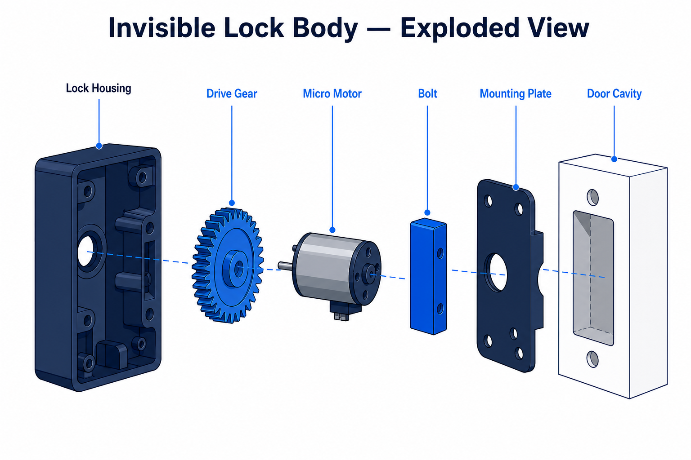
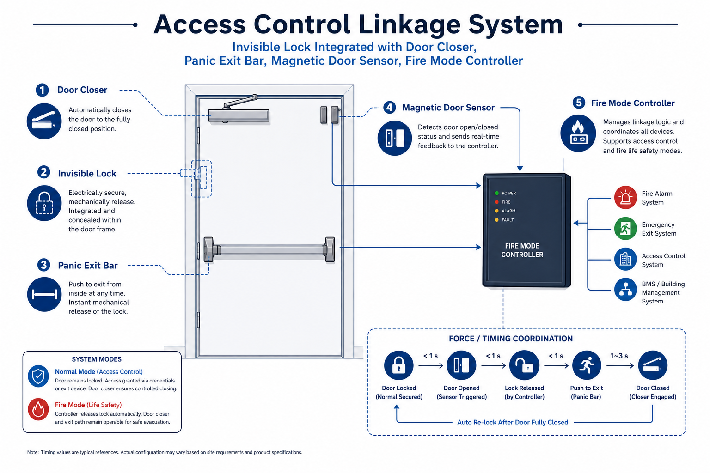
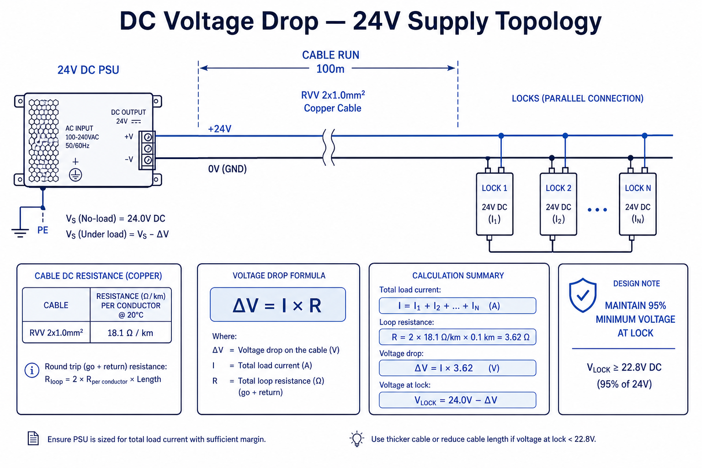
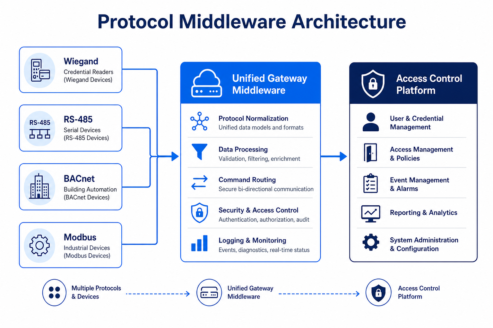
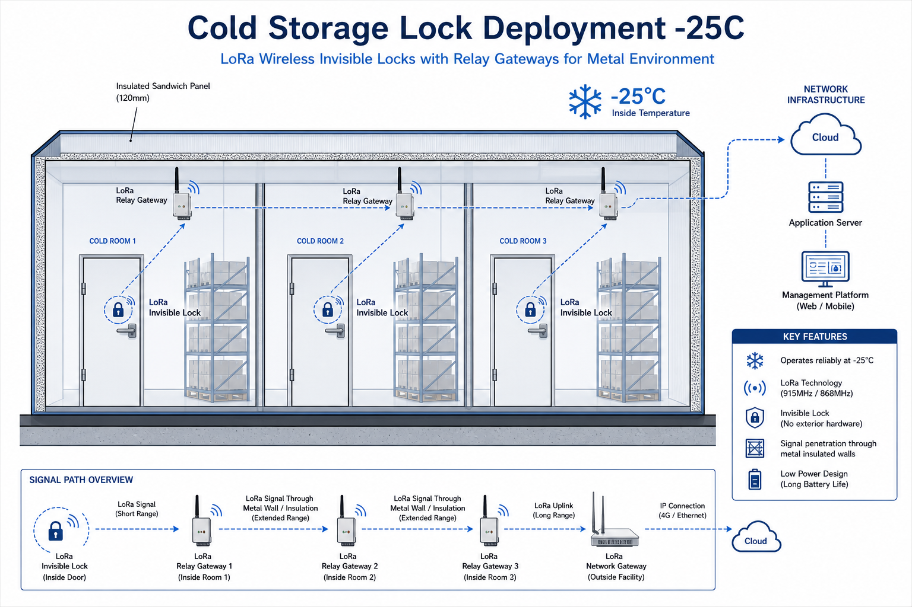
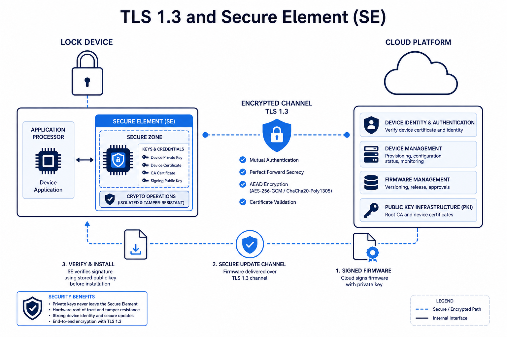

Artigo original da equipa técnica WAFU (Shenzhen), redigido para integradores de sistemas B2B, equipas de procurement proptech e grupos de renovação inteligente de espaços comerciais. Para cenários de hotel e multifamiliar, consulte também o nosso guia quadridimensional de compatibilidade de fechaduras invisíveis. Cite a fonte ao reutilizar.
Parâmetros-Chave em Resumo
01Espessura da Porta
Intervalo suportado: 38 mm a 68 mm (±0,5 mm).
02Custos de Integração
Redução até 30 % com padronização de protocolos.
03Modularidade
Investimento inicial +10–15 %, ROI >150 % em 3 anos.
04Certificação Industrial
IP67, -40 °C a +85 °C, névoa salina 480 h.
05Dimensões de Compatibilidade
Mecânica, elétrica, software, ambiente, segurança, supply chain.
Introdução
A crescente adoção do controlo de acessos empresarial e a procura de elegância arquitetónica tornaram as fechaduras invisíveis B2B a escolha preferida na modernização de espaços comerciais. No entanto, esta opção estética e robusta esconde frequentemente um desafio técnico complexo: a compatibilidade das fechaduras embutidas com a infraestrutura existente. Este artigo analisa sistematicamente seis dimensões críticas — mecânica/estrutural, elétrica/comunicação, ecossistema de software, condições extremas, cibersegurança/LGPD e ciclo de vida da cadeia de suprimentos — propondo um quadro de soluções pragmático para decisões técnicas. Para aprovisionamento OEM/ODM, consulte o white paper B2B de fechaduras inteligentes.
1. Compatibilidade Mecânica e Estrutural: O Jogo de Precisão Micrométrica
A essência revolucionária das fechaduras invisíveis reside na total incorporação do mecanismo de travamento dentro da estrutura da porta ou parede, elevando a compatibilidade mecânica de simples «encaixe» a verdadeira «co-construção». Os desafios concentram-se principalmente nestes eixos:
- Estrutura e Espessura da Porta: As características internas, cavidades e resistências de materiais variam drasticamente entre portas personalizadas de madeira maciça, portas corta-fogo de aço e portas de vidro laminado. Moldes universais são frequentemente inadequados; uma instalação forçada pode causar deformações estruturais ou distribuição desigual de tensão.
- Indicadores Quantitativos: O intervalo padrão de compatibilidade de espessura de porta para fechaduras B2B convencionais geralmente é de 38 mm a 68 mm, com tolerâncias de ±0,5 mm.

- Coordenação de Mecanismos Auxiliares: Sistemas modernos de controlo de acesso frequentemente exigem integração com fechadores, barras de emergência e sensores magnéticos. A curva de torque da fechadura embutida deve corresponder precisamente a esses componentes; caso contrário, surgem riscos de conformidade em modos de emergência.
- Caso Prático (Custo da Incompatibilidade): Em uma UTI de um grande hospital, a incompatibilidade entre a curva de torque de uma porta eletromagnética existente e a nova fechadura embutida impediu o fechamento adequado no modo anti-incêndio. A solução exigiu um módulo de controlo independente, adicionando aproximadamente R$ 1.800 ao custo da reforma pontual.

2. Compatibilidade Elétrica e de Comunicação: O Campo de Batalha «Invisível»
A estabilidade do sistema depende crucialmente da compatibilidade elétrica, cuja complexidade vai além da simples alimentação. Para comparação de protocolos, consulte o nosso guia de seleção tecnológica de fechaduras inteligentes.
- Projeto de Fornecimento de Energia: Fechaduras embutidas tipicamente operam em baixa tensão DC (ex.: 12V/24V). Os desafios incluem queda de tensão em longas distâncias, picos de corrente e interferência eletromagnética (EMI) com sistemas elétricos existentes.
- Análise Quantitativa (Lei de Ohm): A queda de tensão ΔV = I × R. Normas da indústria exigem que a tensão operacional na fechadura seja de pelo menos 95% da tensão nominal. Em um sistema de 24V com corrente de pico de 0,5A e cabo RVV 2×1,0 mm², uma linha de 100 metros resulta em queda de ~0,91V.

- Fragmentação de Protocolos: Controladores de acesso podem suportar Wiegand, RS-485, TCP/IP, BACnet, Modbus, entre outros. Já as fechaduras suportam frequentemente apenas 1–2 protocolos no firmware padrão. A conversão adiciona custos de hardware, novos pontos de falha e latência.
- ROI da Padronização: Em um edifício sede com sistemas de cinco marcas distintas, a adoção de um middleware de protocolo padronizado aumentou os custos iniciais em cerca de 10%, mas reduziu custos de depuração e desenvolvimento em 30%. ROI projetado >150 % em 3 anos.

- Desafios da Implantação Sem Fio: Fechaduras LoRa/NB-IoT exigem equilíbrio entre consumo de energia, penetração de sinal e taxa de atualização. Atenuação por estruturas de concreto pode causar «perda de conexão» em pontos críticos.
- Caso Prático (Logística em Baixa Temperatura): Em um armazém frigorífico a -25°C, 120 fechaduras LoRa sofreram desconexões em massa na primeira semana. A solução envolveu gateways de retransmissão e ajuste de bandas de frequência, com atraso de duas semanas no projeto.

3. Compatibilidade de Integração de Software e API: O Aperto de Mãos Digital
Como dispositivos IoT, o valor das fechaduras invisíveis é concretizado via softwares de gerenciamento (SaaS, plataformas locais). A compatibilidade de software é fundamental para a integração do ecossistema.
- Fragmentação de APIs: A qualidade da documentação de API varia entre fornecedores, assim como métodos de autenticação (OAuth 2.0/API Key), formatos de dados (JSON/XML) e mecanismos de callback. Isso prolonga ciclos de desenvolvimento e eleva custos de manutenção.
- Modelos de Dados e Mapeamento de Permissões: Sistemas de permissão de funcionários existentes (ex.: Active Directory, RH) precisam ser mapeados com precisão para as políticas das fechaduras. Diferenças entre marcas e modelos criam complexidade operacional para manter sincronia e consistência.
- Gerenciamento de Atualizações OTA: Diferentes lotes e modelos podem ter versões de firmware distintas. Atualizações Over-The-Air (OTA) devem garantir compatibilidade com hardware existente, ambientes de rede e software de gerenciamento. Uma atualização em lote mal sucedida pode inutilizar um grande número de dispositivos.
4. Compatibilidade Ambiental e Operacional: Os Testes de Estresse do Mundo Real
As classificações IP e faixas de temperatura dos manuais são medidas em laboratório. Para requisitos de certificação, consulte o nosso guia internacional de certificação de fechaduras invisíveis.
- Temperaturas Extremas e Ciclos Térmicos: Instalações em câmaras frigoríficas (-30°C) ou armários externos em climas tropicais (>70°C) podem causar solidificação de graxa, degradação de componentes eletrônicos e redução drástica da vida útil de baterias. A expansão e contração térmica diária também afeta a precisão mecânica.
- Corrosão Química e Névoa Salina: Ambientes costeiros, químicos ou de processamento de alimentos com alta concentração de névoa salina ou gases corrosivos podem causar corrosão lenta e irreversível em contatos metálicos, placas de circuito e chips internos.
- Vibração e Impacto Contínuos: Fechaduras em portas industriais de alto tráfego, centros logísticos ou próximas a vias de metrô precisam suportar vibrações prolongadas, que podem levar a parafusos soltos, soldas frágeis e falhas de sensores.
- Benchmark para Alta Confiabilidade: Para cenários B2B críticos, procure certificações de nível industrial, incluindo: IP67 (à prova de poeira e imersão), faixa de temperatura operacional de -40°C a +85°C, e aprovação no teste de névoa salina neutra ISO 9227 NSS por 480 horas sem corrosão (nível 9 ou superior).

5. Cibersegurança e Privacidade de Dados: A Nova Fronteira da Conformidade
Como pontos de entrada para sistemas ciberfísicos, as fechaduras invisíveis impactam diretamente os ativos digitais corporativos. Os desafios abrangem todo o ciclo de vida dos dados, com ênfase especial no mercado brasileiro.
- Segmentação de Rede e Princípio do Menor Privilégio: Ao conectar fechaduras à intranet corporativa ou rede IoT, é crucial aplicar isolamento de rede e políticas de firewall rigorosas. Configurações padrão inseguras (portas de depuração abertas) podem criar vetores para ataques laterais.
- Criptografia e Integridade da Transmissão: Toda comunicação deve empregar criptografia robusta. TLS 1.3 deve ser o padrão para transmissões com/sem fio, desativando cifras fracas. Pacotes de atualização de firmware devem passar por verificação de assinatura digital para prevenir ataques à cadeia de suprimentos.
- Armazenamento Seguro e Conformidade com a LGPD (Brasil): Registros de abertura e dados de usuário são dados pessoais sensíveis. Devem ser armazenados criptografados, preferencialmente utilizando um Elemento de Segurança de Hardware (SE) ou Ambiente de Execução Confiável (TEE). A coleta, armazenamento e processamento devem estritamente seguir a Lei Geral de Proteção de Dados Pessoais (LGPD – Lei nº 13.709/2018), implementando privacidade desde a concepção (Privacy by Design). É fundamental garantir o cumprimento dos direitos dos titulares de dados, como acesso, correção e exclusão, e designar um Encarregado pelo Tratamento de Dados (Data Protection Officer — DPO) quando necessário.

6. Compatibilidade com o Ciclo de Vida e Cadeia de Suprimentos: A Perspectiva de 10 Anos
O sucesso B2B é medido pela operação estável ao longo de anos, não apenas pela implantação. Para a cadeia de suprimentos, consulte o nosso guia da cadeia de suprimentos de fechaduras invisíveis e o white paper OEM/ODM B2B.
- Disponibilidade de Peças e Gerenciamento de Fim de Vida (EOL): Componentes críticos (chips, motores) podem sair de produção. Projetos que não priorizam a padronização de componentes podem forçar substituições completas por falta de peças de reposição.
- Compatibilidade com Versões Anteriores e Futuras: A infraestrutura de TI e as plataformas de segurança evoluem. O firmware das fechaduras deve garantir compatibilidade de API com versões futuras de software de gerenciamento. Da mesma forma, novas fechaduras devem se integrar a plataformas legadas existentes.
- Atualizações Suaves com Iteração Tecnológica: A transição de 4G para 5G, ou entre protocolos sem fio, deve ser suportada via substituição modular do módulo de comunicação, não pelo descarte do dispositivo inteiro. A estrutura mecânica deve permitir upgrades (ex.: de cartão para reconhecimento facial + cartão).

Certificações e Patentes
Certificação CE · Conformidade FCC (Part 15) · Conformidade RoHS · Proteção por patentes (DE/EP/CN …)


Conclusão e Quadro de Ação
A questão da compatibilidade em fechaduras invisíveis B2B é, em sua essência, o desafio de integrar um produto industrial de precisão a um sistema físico-digital complexo, heterogêneo e dinâmico. Não é um defeito do produto, mas um teste decisivo para a maturidade da integração sistémica.
Recomendações de Ação para Decisores e Engenheiros:
- Mudança de Mentalidade: Elevar a «compatibilidade» de item de checklist na aquisição a restrição de design fundamental, abrangendo as seis dimensões: mecânica, elétrica, software, ambiental, segurança e cadeia de suprimentos.
- Antecipar Processos e Quantificar Validação: Constituir equipas multifuncionais para revisões conjuntas na fase de design. Quantificar todos os requisitos e estabelecer validação em laboratório e POC em campo.
- Análise de ROI no Ciclo de Vida: Calcular TCO e ROI considerando todo o ciclo de vida. A padronização e modularidade podem aumentar custos iniciais em 10-15%, mas geram economia agregada superior a 30% em três anos.
- Colaboração no Ecossistema: Priorizar fornecedores OEM/ODM estratégicos com gamas completas, APIs abertas, certificações robustas (incluindo LGPD) e estabilidade documentada da cadeia de suprimentos.
Continue com o guia hotel/multifamiliar, o white paper OEM/ODM e a seleção de arquitetura de hardware para completar a avaliação do projeto.
Perguntas Frequentes (FAQ)
P: Qual é a principal causa de falhas intermitentes em fechaduras embutidas?
R: Projeto de alimentação inadequado — queda de tensão em linhas longas, picos de corrente no arranque simultâneo e interferência eletromagnética dos sistemas elétricos existentes.
P: Como garantir retrocompatibilidade com sistemas de controlo de acessos legados?
R: Implementar middleware de protocolo padronizado ou selecionar fechaduras com stacks multiprotocolo nativos.
P: Quais certificações ambientais mínimas exigir em instalações B2B exigentes?
R: IP67, faixa operacional de -40 °C a +85 °C e teste de névoa salina neutra ISO 9227 NSS por 480 horas (nível 9 ou superior).
P: A comunicação sem fio (LoRa/NB-IoT) é fiável em ambientes críticos?
R: Depende das condições de atenuação. Em ambientes complexos, realize testes de propagação em campo e planeie gateways de retransmissão.